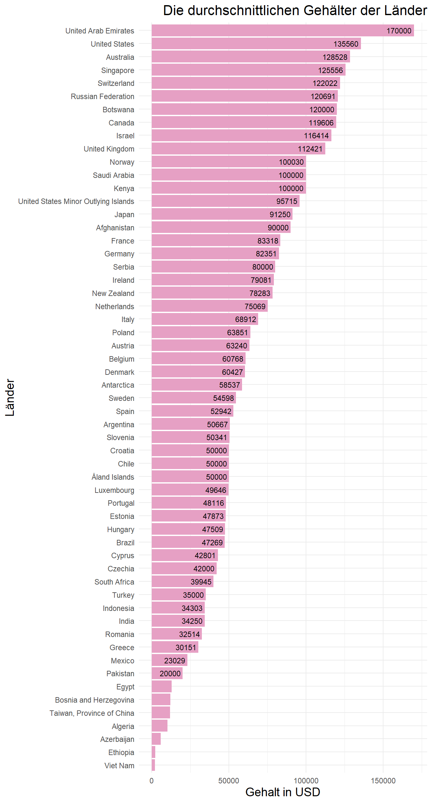
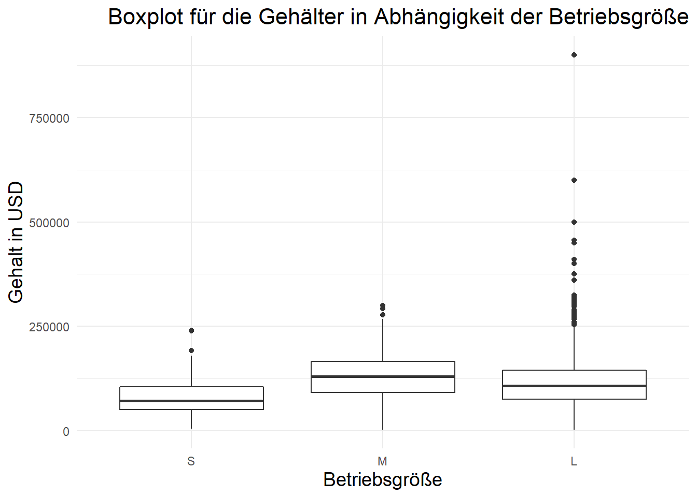
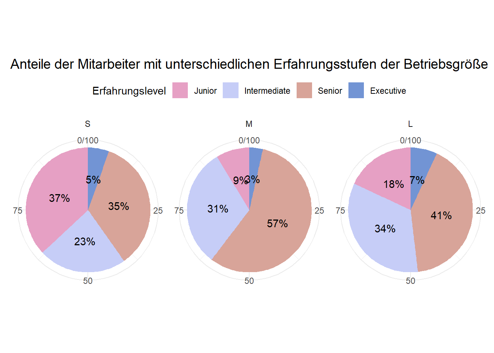
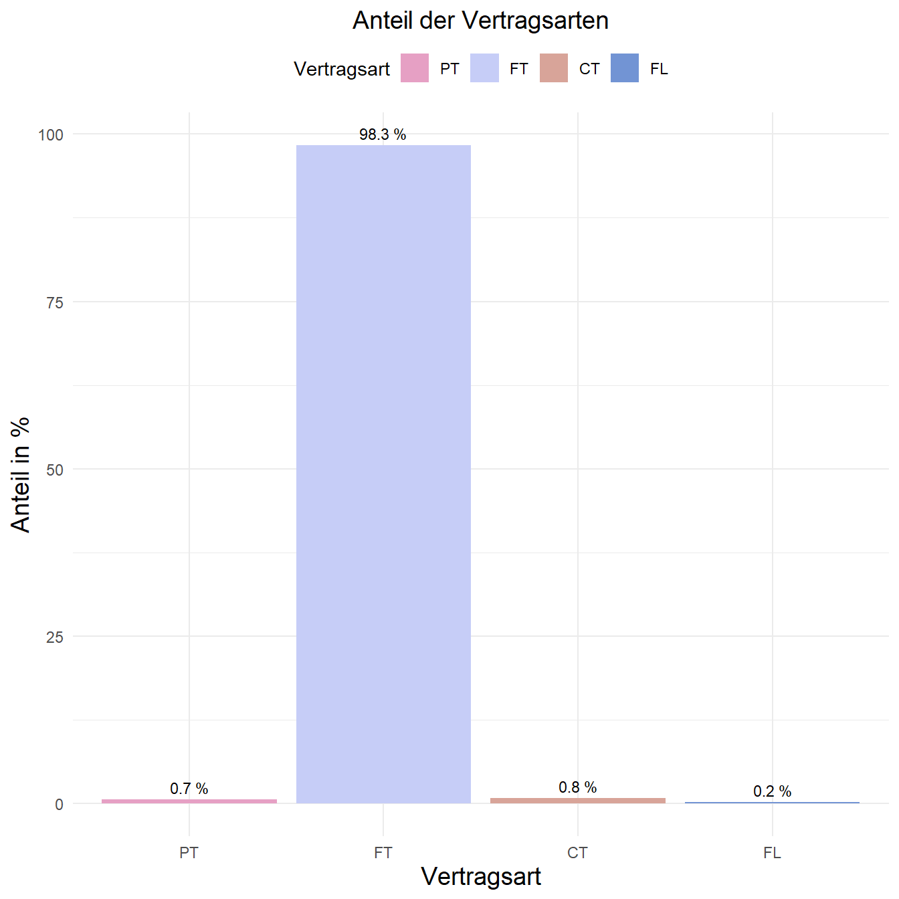

Untersuchung der Gehälter von Cyber-Security Experten
1. Formulierung der Fragestellung
Der vorliegende Datensatz enthält Daten über die Jahresgehälter von verschiedenen Angestellten im Bereich Cyber-Security und wird unter folgendem Link https://www.kaggle.com/datasets/whenamancodes/infoseccyber-security-salaries bereitgestellt. Der Datensatz enthält folgende Informationen:
- Arbeitsjahr
- Jobtitel
- Erfahrungslevel
- Job Status
- Jahresgehalt in US-Dollar und anderen Währungen
- Wohnort des Mitarbeiters
- Betriebsstandort
- Betriebsgröße
- Remote Anteil an der Arbeit
1.1 Interesse an den Daten
Dadurch, dass immer mehr Prozesse in Unternehmen digitalisiert werden, steigt auch die Gefahr von Cyber-Angriffen. Um diese Gefahr abzuwehren, werden immer mehr Cyber-Security Experten benötigt. Diese Experten sind in der Lage, die Sicherheit von Unternehmen zu gewährleisten. In dieser Arbeit sollen dafür die Gehälter von verschiedenen Cyber-Security Bereichen untersucht werden, um einen Einblick in die Nachfrage von Cyber-Security Experten zu bekommen. Zudem können die Ergebnisse der Arbeit dazu genutzt werden, um die Gehälter von Cyber-Security Experten zu vergleichen und zu bewerten.
1.2 Fragestellung
Die übergeordnete Fragestellung liegt darin, herauszufinden welche Faktoren von der Bezahlung eines Cyber-Security Experten abhängen. Dabei sind die einzelnen Faktoren miteinander zu vergleichen und mögliche Korrelationen aufzudecken.
Innerhalb des Cyber-Security Bereichs existieren zudem viele unterschiedliche Titel die auf den genaueren Einsatzbereich des Angestellten schließen können. Hier können möglicherweise einzelne Gruppen gebildet werden, die ebenfalls einen gewissen Einfluss auf das Gehalt eines Mitarbeiters haben.
Abgesehen davon könnte sich auch die Fragestellung ergeben, ob sich die Gehälter von Cyber-Security Experten über die Zeit verändert haben. Hierbei ist zu untersuchen, wo und durch welche Faktoren sich die Gehälter verändert haben.
1.3 Erwartete Ergebnisse
Folgende Erwartungen kamen in der ersten Auseinandersetzung mit dem Datensatz anhand persönlicher Überlegungen auf:
- Starke Korrelation des Gehalts mit Erfahrungen
- Bekannte/Größere Betriebe zahlen ihren Mitarbeitern mehr
- Regionale Unterschiede sind vergleichbar mit den Lebensunterhaltungskosten
- Remote Anteil an der Arbeit hat keinen Einfluss auf das Gehalt
- Über die Zeit verdienen Cyber-Security Experten mehr Geld
Innerhalb des Projekts wird versucht Beweise für die aufgestellten Erwartungen zu sammeln, die dafür- oder dagegen sprechen können.
2. Laden der Daten und entdecken der Datenstruktur
In diesem Schritt werden die Daten geladen und genauer untersucht. Dabei werden die Daten auf mögliche Fehler überprüft und die Datenstruktur genauer betrachtet. Ziel ist es, wichtige Schritte zu definieren, die im nächsten Schritt für die Aufbereitung der Daten wichtig sind.
# Daten laden
data <- as_tibble(read_csv("data/Cyber_salaries.csv", show_col_types = FALSE))
head(data, count) |> knitr::kable()| work_year | experience_level | employment_type | job_title | salary | salary_currency | salary_in_usd | employee_residence | remote_ratio | company_location | company_size |
|---|---|---|---|---|---|---|---|---|---|---|
| 2022 | EN | FT | Information Security Officer | 68000 | EUR | 72762 | DE | 100 | DE | S |
| 2022 | SE | FT | Security Officer | 123400 | USD | 123400 | US | 0 | US | M |
| 2022 | SE | FT | Security Officer | 88100 | USD | 88100 | US | 0 | US | M |
| 2022 | SE | FT | Security Engineer | 163575 | USD | 163575 | US | 100 | US | M |
| 2022 | SE | FT | Security Engineer | 115800 | USD | 115800 | US | 100 | US | M |
| 2022 | MI | FT | Penetration Testing Engineer | 40000 | EUR | 42801 | CY | 100 | CY | L |
| 2022 | SE | FT | Security Analyst | 136600 | USD | 136600 | US | 100 | US | M |
| 2022 | SE | FT | Security Analyst | 109280 | USD | 109280 | US | 100 | US | M |
| 2022 | SE | FT | Security Engineer | 211600 | USD | 211600 | US | 100 | US | M |
| 2022 | SE | FT | Security Engineer | 182160 | USD | 182160 | US | 100 | US | M |
2.1 Übersicht der Daten
Daraus folgt, dass die Daten erfolgreich importiert wurden und folgende Datenstruktur aufweisen:
| Variable | Typ | Unique Values | Beschreibung |
|---|---|---|---|
| work_year | Integer | Zwischen 2020 und 2022 | Arbeitsjahr |
| experience_level | chr | EN, SE, MI, EX | Erfahrungslevel, wobei EN - Entry level / Junior, MI - Mid level / Intermediate, SE - Senior level / Expert, EX - Executive level / Director |
| employment_type | chr | FT, PT, CT, FL | Art der Anstellung, wobei PT - Part time, FT - Full time, CT - Contract, FL - Freelance |
| job_title | chr | Information Security Officer, Security Officer, Security Engineer, Penetration Testing Engineer, Security Analyst, Security Consultant, … | Jobtitel (hier nur die ersten 10 abgebildet) |
| salary | Integer | Zwischen 1740 und 500000000 | Jahresgehalt |
| salary_currency | chr | EUR, USD, GBP, BRL, INR, CAD, CHF, DKK, SGD, AUD, SEK, MXN, ILS, PLN, NOK, IDR, NZD, HUF, ZAR, TWD, RUB | Währung |
| salary_in_usd | Integer | Zwischen 2000 und 899920 | Jahresgehalt in USD |
| employee_residence | chr | DE, US, CY, BA, GB, CA, IN, FR, ES, BR, BW, TW, NL, AE, CH, DK, CL, SG, AU, IT, PK, GR, GH, AZ, RO, AR, DZ, AF, SI, HR, SE, HU, ET, MX, IL, IE, PL, CR, JP, PT, NG, NO, CZ, ID, EE, KG, KE, BG, IR, NZ, BE, ZA, AT, LU, EG, VN, SA, LT, RU, TR | Wohnort des Mitarbeiters nach Ländercode (ISO 3166) |
| remote_ratio | Integer | Zwischen 0 und 100 | Remote Anteil an der Arbeit 0 - Keine Remote Arbeit (weniger als 20%), 50 - Teilweise Remote, 100 - Komplett Remote (mehr als 80%) |
| company_location | chr | DE, US, CY, BA, GB, CA, ES, BR, BW, SG, NL, IN, AE, CH, DK, CL, AU, FR, IT, JP, GR, AZ, RO, DZ, AQ, AX, SI, HR, SE, HU, ET, MX, IL, IE, PK, NO, PL, PT, RU, CZ, ID, EE, KE, RS, AR, NZ, BE, ZA, AT, UM, LU, EG, TW, VN, SA, AF, TR | Betriebsstandort nach Ländercode (ISO 3166) |
| company_size | chr | S, M, L | Betriebsgröße, wobei S(small) - Weniger als 50 Angestellte , M(medium) - Zwischen 50 und 250 Angestellte , L(large) - Mehr als 250 Angestellte |
Bei genauerer Betrachtung der vorhandenen Daten fällt auf, dass einzelne Variablen, wie z.B. experience_level oder employment_type, als chr definiert sind. Dies ist jedoch nicht korrekt, da diese Variablen als factor definiert sein sollten. Dafür müssen für die einzelnen Variablen Faktoren bzw. geordnete Faktoren angelegt werden. Zusätzlich ist zu beachten, dass die Variablen salary und salary_currency nicht benötigt werden, da diese Informationen bereits in salary_in_usd umgerechnet in US-Dollar enthalten sind. Die Variablen salary und salary_currency sollten daher im nächsten Schritt gelöscht werden. Damit die Daten auch lesbar sind, können die Inhalte der character Felder ausgeschrieben werden. So sollten zum Schluss z.B. die Ländernamen nicht mehr nur abgekürzt vorhanden sein, sondern auch in ausgeschriebenem Format.
2.2 Duplikate
Außerdem muss der Datensatz auf doppelte Einträge überprüft werden. Dazu wird die Funktion duplicated() verwendet, die alle doppelten Einträge zurückgibt. Die Funktion sum() gibt die Anzahl der doppelten Einträge zurück. Die Anzahl der doppelten Einträge sollte mit 0 übereinstimmen. Ist dies nicht der Fall, müssen die doppelten Einträge im nächsten Schritt bereinigt werden.
# Anzahl der doppelten Einträge
duplicate <- sum(duplicated(data))
# Ausgeben der doppelten Einträge
head(data[duplicated(data),], count) |> knitr::kable()| work_year | experience_level | employment_type | job_title | salary | salary_currency | salary_in_usd | employee_residence | remote_ratio | company_location | company_size |
|---|---|---|---|---|---|---|---|---|---|---|
| 2022 | SE | FT | Security Engineer | 211600 | USD | 211600 | US | 100 | US | M |
| 2022 | SE | FT | Security Engineer | 182160 | USD | 182160 | US | 100 | US | M |
| 2022 | SE | FT | Security Engineer | 211600 | USD | 211600 | US | 100 | US | M |
| 2022 | SE | FT | Security Engineer | 182160 | USD | 182160 | US | 100 | US | M |
| 2022 | SE | FT | Penetration Tester | 125000 | USD | 125000 | US | 100 | US | M |
| 2022 | SE | FT | Security Engineer | 154700 | USD | 154700 | US | 100 | US | M |
| 2022 | SE | FT | Security Engineer | 131495 | USD | 131495 | US | 100 | US | M |
| 2022 | SE | FT | Cyber Threat Analyst | 137000 | USD | 137000 | US | 100 | US | L |
| 2022 | SE | FT | Security Consultant | 228600 | USD | 228600 | US | 100 | US | L |
| 2022 | SE | FT | Security Consultant | 153600 | USD | 153600 | US | 100 | US | L |
Es sind also 115 doppelte Einträge vorhanden. Die Duplikate können jedoch nicht aus dem Datensatz entfernt werden, da es keine eindeutigen Informationen/Identifikatoren über die einzelnen Personen gibt und davon ausgegangen werden muss, dass es sich um unterschiedliche Personen des selben Unternehmens mit der selben Bezahlung handelt.
2.3 Fehlende Werte
Bevor mit dem Bereinigen und umformatieren begonnen werden kann muss überprüft werden, ob die Daten vollständig sind. Dazu wird die Funktion complete.cases() verwendet, die alle Zeilen zurückgibt, die keine fehlenden Werte enthalten. Die Funktion sum() gibt die Anzahl der Zeilen zurück, die keine fehlenden Werte enthalten. Die Anzahl der Zeilen, die keine fehlenden Werte enthalten, sollte mit der Anzahl der Zeilen im Datensatz übereinstimmen. Ist dies nicht der Fall, müssen die fehlenden Werte im nächsten Schritt bereinigt werden.
# Anzahl der Zeilen ohne fehlende Werte
sum(complete.cases(data)) == nrow(data)[1] TRUEEs sind also keine NA’s vorhanden. Damit können die Daten bereinigt werden.
3. Transformieren und säubern der Daten
Aus dem vorherigen Abschnitt folgt, dass verschiedene Faktoren für die einzelnen Spalten angelegt und die Spalten salary und salary_currency gelöscht werden müssen. Zusätzlich werden die Ländernamen in den Spalten employee_residence und company_location ausgeschrieben.
titles <- unique(data$job_title)
data_cleaned <- data |> mutate(
work_year = factor(work_year, levels= c(2020,2021,2022), ordered = T),
experience_level = factor(experience_level, levels= c('EN', 'MI', 'SE', 'EX'), labels = c('Junior', 'Intermediate', 'Senior', 'Executive'), ordered = T),
employment_type = factor(employment_type, levels= c('PT', 'FT', 'CT', 'FL'), ordered = T),
company_size = factor(company_size, levels= c('S', 'M', 'L'), ordered = T),
job_title = factor(job_title, levels = titles),
salary = NULL,
salary_currency = NULL,
remote_ratio = factor(remote_ratio, levels = c(0, 50, 100), labels = c('0%', '50%', '100%'), ordered = T),
)
# Neue Datenstruktur
str(data_cleaned)tibble [1,349 × 9] (S3: tbl_df/tbl/data.frame)
$ work_year : Ord.factor w/ 3 levels "2020"<"2021"<..: 3 3 3 3 3 3 3 3 3 3 ...
$ experience_level : Ord.factor w/ 4 levels "Junior"<"Intermediate"<..: 1 3 3 3 3 2 3 3 3 3 ...
$ employment_type : Ord.factor w/ 4 levels "PT"<"FT"<"CT"<..: 2 2 2 2 2 2 2 2 2 2 ...
$ job_title : Factor w/ 87 levels "Information Security Officer",..: 1 2 2 3 3 4 5 5 3 3 ...
$ salary_in_usd : num [1:1349] 72762 123400 88100 163575 115800 ...
$ employee_residence: chr [1:1349] "DE" "US" "US" "US" ...
$ remote_ratio : Ord.factor w/ 3 levels "0%"<"50%"<"100%": 3 1 1 3 3 3 3 3 3 3 ...
$ company_location : chr [1:1349] "DE" "US" "US" "US" ...
$ company_size : Ord.factor w/ 3 levels "S"<"M"<"L": 1 2 2 2 2 3 2 2 2 2 ...Damit die einzelnen Länder lesbar sind und in einen Zusammenhang mit den Daten gebracht werden können, werden hier die Länder-Codes durch die Ländernamen ersetzt. Dafür wird der Dataframe ISO_3166_1 verwendet, der die Ländercodes und die zugehörigen Ländernamen enthält. Die Ländercodes werden mit den Ländernamen aus dem Dataframe ISO_3166_1 ersetzt.
# Ländernamen hinzufügen
data_cleaned <- data_cleaned |>
full_join(ISO_3166_1[,c("Alpha_2","Name")], by = c("employee_residence" = "Alpha_2"), ) |>
full_join(ISO_3166_1[,c("Alpha_2","Name")], by = c("company_location" = "Alpha_2")) |>
mutate(
employee_residence = Name.x,
company_location = Name.y,
Name.x = NULL,
Name.y = NULL,
) |> drop_na() # Löschen von Ländern die keine Verbindung gefunden haben
# Neue Datenstruktur
str(data_cleaned)tibble [1,349 × 9] (S3: tbl_df/tbl/data.frame)
$ work_year : Ord.factor w/ 3 levels "2020"<"2021"<..: 3 3 3 3 3 3 3 3 3 3 ...
$ experience_level : Ord.factor w/ 4 levels "Junior"<"Intermediate"<..: 1 3 3 3 3 2 3 3 3 3 ...
$ employment_type : Ord.factor w/ 4 levels "PT"<"FT"<"CT"<..: 2 2 2 2 2 2 2 2 2 2 ...
$ job_title : Factor w/ 87 levels "Information Security Officer",..: 1 2 2 3 3 4 5 5 3 3 ...
$ salary_in_usd : num [1:1349] 72762 123400 88100 163575 115800 ...
$ employee_residence: chr [1:1349] "Germany" "United States" "United States" "United States" ...
$ remote_ratio : Ord.factor w/ 3 levels "0%"<"50%"<"100%": 3 1 1 3 3 3 3 3 3 3 ...
$ company_location : chr [1:1349] "Germany" "United States" "United States" "United States" ...
$ company_size : Ord.factor w/ 3 levels "S"<"M"<"L": 1 2 2 2 2 3 2 2 2 2 ...4. Auswertungen
Die aufbereiteten Daten können nun in diesem Abschnitt ausgewertet werden. Hierfür werden verschiedene Abbildungen und Grafiken generiert sowie beschrieben.
4.1 Betrachtung von Gehalt und Erfahrungslevel
Um einen Einblick zu erhalten, wie viele Daten pro Jahr und Erfahrungslevel vorliegen, wird eine Grafik erstellt, die die Anzahl an Daten pro Jahr aufzeigt. Hierfür werden die einzelnen Daten pro Jahr und Erfahrungslevel gezählt und in einem Balkendiagramm dargestellt.
Code
# Anzahl an Daten pro Jahr
data_cleaned |>
group_by(work_year, experience_level) |>
summarise(n = n()) |>
ggplot(aes(x = work_year, y = n, fill = experience_level)) +
geom_col() +
geom_text(aes(label = n), size = 3, position = position_stack(vjust = 0.5)) +
ggtitle("Anzahl an Daten pro Jahr und Erfahrung") +
labs(fill = "Erfahrung", x = "Jahr", y = "Anzahl an Daten") +
scale_fill_manual(values=wes_palette(n = 4, name = color_palette)) +
theme_minimal() +
theme(
legend.position = "top",
legend.title = element_text(),
plot.title = element_text(hjust = 0.5, size = 16),
axis.title = element_text(size = 14),
)Es ist zu sehen, dass über die Zeit mehr Daten erfasst wurden und am meisten Daten von Senior und Intermediate Mitarbeitern enthalten sind. Die Daten von Executive Mitarbeitern sind dafür am wenigsten. Das liegt vermutlich daran, dass es weniger Executive Mitarbeiter gibt und weniger Daten von diesen Mitarbeitern vorliegen.
4.1.2 Entwicklung der Gehälter pro Jahr und Erfahrungslevel
Um einen Einblick zu erhalten, wie sich die Gehälter im Laufe der Zeit entwickelt haben, wird eine Grafik erstellt, die die Entwicklung der Gehälter pro Jahr anzeigt. Zusätzlich wird nach der Erfahrung gruppiert, um zu sehen, wie sich die Gehälter in Abhängigkeit zur Erfahrung und Jahr entwickelt haben.
Code
# Berechnung der Eckdaten für die folgenden Plots
plot_data <- data_cleaned |>
group_by(experience_level, work_year) |>
summarise(
mean_salary = mean(salary_in_usd, na.rm = T),
median_salary = median(salary_in_usd, na.rm = T),
sd_salary = sd(salary_in_usd, na.rm = T),
n = n()
)
per_level <- data_cleaned |>
group_by(experience_level) |>
summarise(
mean_salary = mean(salary_in_usd, na.rm = T),
median_salary = median(salary_in_usd, na.rm = T),
sd_salary = sd(salary_in_usd, na.rm = T),
n = n()
)
# Ehrfarung gegenüber Mitellwert der Gehälter pro Jahr
ggplot(plot_data, aes(x = experience_level, y = mean_salary, group = work_year, fill = work_year)) +
geom_col(position = "dodge") +
geom_text(aes(label = round(mean_salary, 0)), position = position_dodge(width = 0.9), vjust = -0.25, size = 3) +
ggtitle("Gehalt für pro Erfahrungslevel und Jahr") +
labs(fill = "Arbeitsjahr", x = "Erfahrung", y = "Gehalt in USD") +
scale_fill_manual(values=wes_palette(n = 3, name = color_palette)) +
theme_minimal() +
theme(
legend.position = "top",
legend.title = element_text(),
plot.title = element_text(hjust = 0.5, size = 16),
axis.title = element_text(size = 14),
)In der Grafik ist zu erkennen, dass die Gehälter von Senior und Executives im Laufe der Zeit gestiegen sind, bei den anderen beiden sind sie ähnlich geblieben. Zusätzlich ist zu erkennen, dass die Gehälter für die Erfahrungslevel Senior und Executives im Vergleich zu den anderen Erfahrungsleveln deutlich höher sind. Betrachtet man den Boxplot für das Verhältnis, wird das deutlich. Zu beachten ist aber, dass die einzelnen Datenpunkte nicht alle gleich verteilt sind, da die Anzahl der Datenpunkte für die einzelnen Erfahrungslevel unterschiedlich ist.
Code
# Boxplot für das Verhältnis der Gehälter pro Jahr
ggplot(plot_data, aes(x = experience_level, y = mean_salary)) +
geom_boxplot() +
ggtitle("Boxplot für das Verhältnis der Gehälter pro Erfahrungsstufe") +
labs(fill = "Arbeitsjahr", x = "Erfahrung", y = "Gehalt in USD") +
theme_minimal() +
theme(
legend.position = "top",
legend.title = element_text(),
plot.title = element_text(hjust = 0.5, size = 16),
axis.title = element_text(size = 14),
)Auch hier ist zu sehen, dass die Gehälter von Executives deutlich höher sind und die Streuung der Datenpunkte bei den Executives am größten ist. Das liegt daran, dass es nur wenige Datenpunkte gibt und die Gehälter von Executives sehr unterschiedlich sind (Standardabweichung in 2022: 85380 USD). Bei Junior und Intermediate Mitarbeitern ist die Streuung der Datenpunkte am geringsten. So liegt das Gehalt im Schnitt wie folgt:
JuniorMitarbeiter: 63727 USDIntermediateMitarbeiter: 102297 USDSeniorMitarbeiter: 145937 USDExecutiveMitarbeiter: 198020 USD
4.2 Die verschiedenen Berufstitel
Jeder Datensatz enthält den Titel des jeweiligen Berufes der Person. Im folgenden Abschnitt werden diese untersucht auf Häufigkeit sowie auf deren durchschnittliche Gehälter. Jedoch ist anzumerken, dass nur wenig über die einzelnen Berufstitel ausgesagt werden kann, da die genaue Tätigkeit vom jeweiligen Unternehmen abhängt und in einem Berufstitel zusammengefasst werden können.
4.2.1 Häufigkeit der Berufstitel
Bei den einzelnen Berufstiteln ist es schwer herauszufinden, was genau die Bedeutung und Position der einzelnen Person ist, da diese gerne durch das Unternehmen selbst definiert werden. Aufgrund dessen werden in der folgenden Darstellung die einzelnen Titel nach Häufigkeit gruppiert und die einzelnen Gruppen in Prozent angegeben. Es werden nur die 10 häufigsten Titel angegeben, alle anderen werden in der Gruppe Andere zusammengefasst.
Code
counting <- data_cleaned |> count(job_title, sort = TRUE)
head(counting, count) |> knitr::kable()| job_title | n |
|---|---|
| Security Engineer | 247 |
| Cyber Security Analyst | 134 |
| Penetration Tester | 77 |
| Information Security Manager | 65 |
| Cyber Security Engineer | 63 |
| Security Analyst | 53 |
| Information Security Analyst | 39 |
| Cyber Security Specialist | 31 |
| Information Security Officer | 29 |
| Cyber Threat Intelligence Analyst | 29 |
Code
titles <- top_n(counting,count) |> pull(job_title)
counting <- rbind(top_n(counting,count), slice(counting,(count+1):n()) |>
summarise(job_title="Andere",n=sum(n))) |>
mutate(n = round(n/sum(n) * 100)) |>
arrange(desc(n))|>
mutate(
job_title = factor(job_title, levels = job_title, ordered = T)
)
ggplot(counting, aes(x = "", y=n, fill=job_title)) +
geom_bar(stat = "identity", width=1, color = "black") +
coord_polar("y", start = 0) +
geom_text(aes(label = paste0(n, "%")), position = position_stack(vjust = 0.5)) +
labs(x = NULL, y = NULL, fill = NULL) +
theme_minimal() +
scale_fill_manual(values=wes_palette(n = 11, name = color_palette, type = "continuous")) +
ggtitle("Verteilung der Berufstitel") +
theme(
plot.title = element_text(hjust = 1, size = 16),
axis.title = element_text(size = 14),
)
Zu sehen ist, dass ein großer Teil in der Gruppe Andere zusammengefasst wurde. Dies könnte damit zusammenhängen, dass es entweder eine große Anzahl an unterschiedlichen Berufen innerhalb des IT-Security-Sektors existieren oder gleiche Berufe in den Betrieben unterschiedlich benannt werden. Jedoch ist davon auszugehen, dass es sich um eine starke Verteilung handelt, da kein Berufstitel in den 43% der Gruppe Andere die 2 % Hürde überschreitet. Trotz dessen ist zu erkennen, dass ein größerer Trend in den Berufen Security Engineer und Cyber Security Analyst besteht.
4.2.2 Durchschnittliche Gehälter pro Berufstitel
Nachfolgend werden die durchschnittlichen Gehälter pro Berufstitel mit der jeweiligen Verteilung angezeigt. Hierbei werden nur die 10 häufigsten Berufstitel berücksichtigt, die in der vorherigen Verteilung der Berufstitel bereits dargestellt wurden.
Code
# Durchschnittliche Gehälter der zuvor ausgewählten Berufstitel
job_title_mean_salary <- data_cleaned[data_cleaned$job_title %in% titles,] |>
group_by(job_title) |>
summarise(mean_salary = mean(salary_in_usd)) |>
mutate(job_title = factor(job_title, levels = rev(titles), ordered = T))
# Bar Plot für die durchschnittlichen Gehälter pro Berufstitel
ggplot(job_title_mean_salary, aes(x = job_title, y = mean_salary)) +
geom_bar(stat = "identity", fill = color, color = "black") +
ggtitle("Die durchschnittlichen Gehälter der 10 häufigsten Berufstitel") +
labs(x = "Berufstitel", y = "Gehalt in USD") +
theme_minimal() +
geom_text(aes(label = round(mean_salary)), size = 4, hjust = 1.1, color="black") +
theme(
plot.title = element_text(hjust = 1, size = 16),
axis.title = element_text(size = 14),
) +
coord_flip()Code
# Boxplot für die Gehälter der 10 meist auftretenden Berufstitel
t <- data_cleaned[data_cleaned$job_title %in% titles,] |>
mutate(job_title = factor(job_title, levels = rev(titles), ordered = T))
ggplot(t , aes(x = job_title, y = salary_in_usd)) +
geom_boxplot() +
ggtitle("Boxplot für die Gehälter der 10 häufigsten Berufstitel") +
labs(x = "Berufstitel", y = "Gehalt in USD") +
theme_minimal() +
theme(
plot.title = element_text(hjust = 1, size = 16),
axis.title = element_text(size = 14),
) +
coord_flip()
Wie zu vermuten sind Berufe mit enthaltenen Titeln: Manager und Officer im Gehalt etwas höher einzustufen als die Anderen. Jedoch gibt es zum einen den Ausreißer Security Engineer, der das höchste durchschnittliche Gehalt ausmacht und zum anderen gibt es den Ausreißer Cyber Threat Intelligence Analyst der womöglich ein spezieller Beruf ist und somit auch ein höheres Gehalt hat.
Die Verteilung der Gehälter ist bei den meisten Berufstiteln recht gleichmäßig, jedoch gibt es auch hier Ausreißer. Dies könnte damit zusammenhängen, dass es sich bei den Gehältern um die der jeweiligen Länder handelt. Aufgrund dessen werden in der folgenden Darstellung die einzelnen Länder mit der jeweiligen durchschnittlichen Bezahlung dargestellt. Als Referenz Titel wurde hierbei Information Security Officer genommen, da dieser eine starke Verteilung ausmacht.
Code
job_title_mean_salary <- data_cleaned[data_cleaned$job_title == "Information Security Officer",] |>
group_by(company_location) |>
summarise(mean_salary = mean(salary_in_usd), count = n()) |>
arrange(desc(mean_salary))
ggplot(job_title_mean_salary, aes(x = reorder(company_location, mean_salary), y = mean_salary)) +
geom_bar(stat = "identity", fill=color) +
ggtitle("Die durchschnittlichen Gehälter der Länder für den Beruf 'Information Security Officer'") +
labs(x = "Länder", y = "Gehalt in USD") +
theme_minimal() +
geom_text(data = subset(job_title_mean_salary, mean_salary > 15000), aes(label = round(mean_salary)), size = 3, hjust = 1.1, color="black") +
geom_text(aes(label = count), hjust = -0.5, size = 3) +
theme(
plot.title = element_text(hjust = 0.5, size = 10),
axis.title = element_text(size = 14),
) +
coord_flip()
Für die Vermutung spricht, dass das Gehalt in den USA höher als in den restlichen Ländern ist. Zudem, sind deutlich mehr Datensätze in den USA vorhanden als in den anderen Ländern, die in der Darstellung zu erkennen sind.
4.4 Standort des Betriebs
Ein weiterer Aspekt, der die Gehälter beeinflussen kann, ist der Standort des Betriebs. In der folgenden Darstellung wird die durchschnittliche Bezahlung der Länder dargestellt.
Code
everage_salary_per_country <- data_cleaned |>
group_by(company_location) |>
summarise(mean_salary = mean(salary_in_usd)) |>
arrange(desc(mean_salary))
ggplot(everage_salary_per_country, aes(x = reorder(company_location, mean_salary), y = mean_salary)) +
geom_bar(stat = "identity", fill=color) +
ggtitle("Die durchschnittlichen Gehälter der Länder") +
labs(x = "Länder", y = "Gehalt in USD") +
theme_minimal() +
geom_text(data = subset(everage_salary_per_country, mean_salary > 15000), aes(label = round(mean_salary)), size = 3, hjust = 1.1, color = "black") +
theme(
plot.title = element_text(hjust = 1, size = 16),
axis.title = element_text(size = 14),
) +
coord_flip()
Die ausgewerteten Gehälter der einzelnen Länder sind auch mit den ungefähren Durchschnittsgehältern der Länder vergleichbar. Jedoch wird auf eine tiefere Analyse mit der durchschnittlichen Bezahlung der einzelnen Ländern verzichtet, da dies nicht der Fokus der Auswertung ist.
Code
# Berechnung der Anzahl der Datensätze pro Land
count_per_country <- data_cleaned |> count(company_location, sort = TRUE)
# Zusammenfassen der Länder mit weniger als 10 Datensätzen
count_per_country <- rbind(top_n(count_per_country, count), slice(count_per_country, (count + 1):n()) |>
summarise(company_location = "Andere",n = sum(n))) |>
arrange(desc(n))
# Plot für die die Anzahl der Datensätze pro Land
ggplot(count_per_country, aes(x = n, y = reorder(company_location, n))) +
geom_bar(stat = "identity", fill = color, color = "black") +
geom_text(aes(label = n), hjust = -0.25, size = 3) +
ggtitle("Anzahl der Datensätze pro Land") +
labs(x = "Anzahl der Datensätze", y = "Länder") +
theme_minimal() +
theme(
plot.title = element_text(hjust = 0.5, size = 10),
axis.title = element_text(size = 14),
)
Klar zu erkennen ist auch, dass der ausgesuchte Datensatz auf einer Mehrzahl an Datensätzen aus den USA basiert. Da dadurch kein klarer Vergleich zwischen den Ländern möglich ist, wird auf eine weitere Auswertung verzichtet.
4.5 Betriebsgröße
Ein weiterer Betrachtungspunkt ist die Betriebsgröße. Wie bereits beschrieben, gibt es drei verschiedene Größen: S, M, L. Wobei ein Unternehmen der Größe S weniger als 50 Mitarbeiter, ein Unternehmen der Größe M zwischen 50 und 500 Mitarbeiter und ein Unternehmen der Größe L mehr als 500 Mitarbeiter hat. Die folgende Grafik zeigt die Verteilung der Betriebsgröße.
Code
# Verteilung der Betriebsgröße
data_cleaned |>
count(company_size, sort = TRUE) |>
ggplot(aes(x = n, y = company_size)) +
geom_bar(stat = "identity", fill=color, color = "black") +
geom_text(aes(label = n), size = 4, vjust = -0.5, color = "black") +
ggtitle("Verteilung der Betriebsgröße") +
labs(x = "Anzahl", y = "Betriebsgröße") +
theme_minimal() +
theme(
legend.position = "top",
legend.title = element_text(),
plot.title = element_text(hjust = .5, size = 16),
axis.title = element_text(size = 14),
) +
coord_flip()Es ist zu sehen, dass überwiegend Mitarbeiter aus großen Firmen in diesem Datensatz enthalten sind. Das kann darauf zurückzuführen sein, dass einzelne große Firmen die Daten freigegeben haben, aber mehr Mitarbeiter beschäftigen als kleinere Firmen. Wichtig ist, dass diese Zahl keine Aussage liefert, wie viele verschiedene Unternehmen enthalten sind, sondern dafür, wie viele Mitarbeiter aus diesem Datensatz in einem großen, mittleren bzw. kleinen Unternehmen arbeiten.
4.5.1 Gehälter in Abhängigkeit der Betriebsgröße
Als Nächstes wird die Verteilung der Gehälter in Abhängigkeit der Betriebsgröße betrachtet. Dazu wird zuerst eine Übersicht über die statistischen Eckdaten für das Verhältnis von Gehältern in Abhängigkeit zur Betriebsgröße und anschließend ein passender Boxplot erstellt.
Code
# Statistische Daten für die Gehälter in Abhängigkeit der Betriebsgröße
company_size_stats <- data_cleaned |>
group_by(company_size) |>
summarise(
mean = mean(salary_in_usd),
median = median(salary_in_usd),
sd = sd(salary_in_usd),
min = min(salary_in_usd),
max = max(salary_in_usd)
)
# Boxplot für die Gehälter in Abhängigkeit der Betriebsgröße
ggplot(data_cleaned, aes(x = company_size, y = salary_in_usd)) +
geom_boxplot() +
ggtitle("Boxplot für die Gehälter in Abhängigkeit der Betriebsgröße") +
labs(y = "Gehalt in USD", x = "Betriebsgröße") +
theme_minimal() +
theme(
legend.position = "top",
legend.title = element_text(),
plot.title = element_text(hjust = 1, size = 16),
axis.title = element_text(size = 14),
)
Code
company_size_stats |> knitr::kable()| company_size | mean | median | sd | min | max |
|---|---|---|---|---|---|
| S | 83625.23 | 71653.5 | 47643.34 | 4327 | 240000 |
| M | 130029.51 | 130200.0 | 55504.45 | 2000 | 300000 |
| L | 121093.36 | 107500.0 | 76216.74 | 2000 | 899920 |
Es fällt auf, dass der Mittelwert der Gehälter in mittelgroßen Betrieben höher ist als in großen Betrieben. Das kann darauf zurückzuführen sein, dass in großen Betrieben mehr Mitarbeiter beschäftigt sind, die ein ähnliches Gehalt haben und somit der Mittelwert dafür genauer ist. Abgesehen davon ist die Streuung der Gehälter in großen Betrieben größer als in mittelgroßen Betrieben. Hier gibt es einzelne Ausreißer, die ein sehr viel höheres Gehalt haben als die anderen Mitarbeiter. So ist der höchste Wert in großen Betrieben bei 300000 USD und in mittelgroßen Betrieben bei 300000 USD. In kleinen Betrieben ist der Mittelwert am geringsten. Er liegt bei 83625 USD und die Streuung ist hier am geringsten.
4.5.3 Anteil an Erfahrungsstufen pro Betriebsgröße
Eine weitere Fragestellung ist, wie sich die Anzahl der Mitarbeiter mit unterschiedlichen Erfahrungsstufen in den Betrieben verteilt. Dazu wird ein Kuchendiagramm erstellt, das die Anzahl der Mitarbeiter mit unterschiedlichen Erfahrungsstufen in Abhängigkeit der Betriebsgröße darstellt.
Code
# Berechnung der Anteile der Mitarbeiter mit unterschiedlichen Erfahrungsstufen in Abhängigkeit der Betriebsgröße
company_size_exp <- data_cleaned |>
group_by(company_size, experience_level) |>
summarise(
n = n()
)
company_size_exp <- company_size_exp |>
group_by(company_size) |>
mutate(
percentage = (n / sum(n)) * 100
)
# Kuchendiagramme für die Anteile der Mitarbeiter mit unterschiedlichen Erfahrungsstufen in Abhängigkeit der Betriebsgröße
ggplot(company_size_exp, aes(x = "", y = percentage, fill = experience_level)) +
geom_bar(stat = "identity") +
coord_polar("y", start = 0) +
facet_wrap(~ company_size, ncol = 3) +
ggtitle("Anteile der Mitarbeiter mit unterschiedlichen Erfahrungsstufen der Betriebsgröße") +
geom_text(aes(label = paste0(round(percentage), "%")), position = position_stack(vjust=0.5)) +
labs(fill = "Erfahrungslevel", y = NULL, x = NULL) +
scale_fill_manual(values=wes_palette(n = 4, name = color_palette)) +
theme_minimal() +
theme(
legend.position = "top",
legend.title = element_text(),
plot.title = element_text(hjust = 0.5, size = 14),
axis.title = element_text(size = 14),
)
Es ist zu erkennen, dass in den mittleren und großen Betrieben die meisten Mitarbeiter mit einem Erfahrungslevel von Senior arbeiten. Dafür vor allem in kleinen Unternehmen Junior Mitarbeiter. Alle drei Diagramme haben aber gemeinsam, dass die wenigsten Mitarbeiter mit einem Erfahrungslevel von Executive arbeiten. Das ist auch nicht verwunderlich, da diese Mitarbeiter in der Regel die Führungskräfte sind und somit mehr Mitarbeiter unter sich haben. Erstaunlich ist hingegen der geringe Anteil an Junior Mitarbeitern in mittelgroßen Unternehmen. Dies könnte daran liegen, dass diese Unternehmen eher auf die Erfahrung der Mitarbeiter setzen und daher eher Senior Mitarbeiter einstellen. Große Firmen investieren hingegen mehr in die Ausbildung der Mitarbeiter und nehmen daher eher Junior Mitarbeiter auf. Kleine Unternehmen können hingegen Start-ups sein, die noch nicht so viele Mitarbeiter haben und daher auch auf motivierte Junior Mitarbeiter setzen.
4.5.3 Gehälter in Abhängigkeit der Betriebsgröße und des Erfahrungslevels
Es muss nun genauer untersucht werden, ob die Gehälter in Abhängigkeit der Betriebsgröße und des Erfahrungslevels sind. Dazu wird ein Boxplot erstellt, der die Gehälter in Abhängigkeit der Betriebsgröße und des Erfahrungslevels darstellt.
Code
# Statistische Daten für die Gehälter in Abhängigkeit der Betriebsgröße pro Erfahrungslevel
company_size_stats_exp <- data_cleaned |>
group_by(company_size, experience_level) |>
summarise(
mean = mean(salary_in_usd),
median = median(salary_in_usd),
sd = sd(salary_in_usd),
min = min(salary_in_usd),
max = max(salary_in_usd),
n = n()
)
# Boxplot für die Gehälter in Abhängigkeit der Betriebsgröße pro Erfahrungslevel
ggplot(data_cleaned, aes(x = company_size, y = salary_in_usd, fill = experience_level)) +
geom_boxplot() +
ggtitle("Gehälter in Abhängigkeit der Betriebsgröße pro Erfahrungslevel") +
labs(fill = "Erfahrungslevel", y = "Gehalt in USD", x = "Betriebsgröße") +
scale_fill_manual(values=wes_palette(n = 4, name = color_palette)) +
theme_minimal() +
theme(
legend.position = "top",
legend.title = element_text(),
plot.title = element_text(hjust = 0.5, size = 14),
axis.title = element_text(size = 14),
)Code
company_size_stats_exp |> knitr::kable()| company_size | experience_level | mean | median | sd | min | max | n |
|---|---|---|---|---|---|---|---|
| S | Junior | 55835.94 | 52596.0 | 22780.73 | 4327 | 120000 | 34 |
| S | Intermediate | 81552.67 | 78879.0 | 37621.17 | 12005 | 160000 | 21 |
| S | Senior | 107022.28 | 90000.0 | 52350.99 | 19445 | 240000 | 32 |
| S | Executive | 131556.00 | 117810.0 | 72140.15 | 51389 | 239287 | 5 |
| M | Junior | 62388.78 | 59787.5 | 35065.66 | 2000 | 150000 | 40 |
| M | Intermediate | 104670.45 | 101399.0 | 45369.24 | 2056 | 220000 | 142 |
| M | Senior | 152544.03 | 150000.0 | 46468.96 | 27000 | 292000 | 261 |
| M | Executive | 156924.69 | 166250.0 | 78806.83 | 15209 | 300000 | 16 |
| L | Junior | 65961.33 | 65500.0 | 31984.63 | 2000 | 200000 | 144 |
| L | Intermediate | 102662.07 | 97950.0 | 51087.65 | 2202 | 456621 | 270 |
| L | Senior | 144481.43 | 135000.0 | 79880.41 | 2764 | 899920 | 329 |
| L | Executive | 216016.73 | 202000.0 | 94625.60 | 50000 | 600000 | 55 |
Aus dieser Darstellung geht hervor, dass vor allem in großen Betrieben die Gehälter nicht unbedingt bei jedem Mitarbeiter abhängig vom Erfahrungsgrad sind. So sind die Gehälter von Senior Mitarbeitern im Schnitt zwar niedriger als die von Executive Mitarbeitern, aber es gibt dennoch Ausreißer, die ein deutlich höheres Gehalt haben. Aus der Tabelle kann entnommen werden, dass mit 329 Datenpunkten die meisten Datenpunkte in großen Betrieben mit einem Erfahrungslevel von Senior vorliegen. Daraufhin folgen die mittelgroßen Betriebe mit einem Erfahrungslevel von Senior mit 261 Datenpunkten. In kleinen Betrieben mit einem Erfahrungslevel von Senior sind nur 32 Datenpunkte vorhanden.
Abgesehen davon ist das durchschnittliche Gehalt von Junior Mitarbeitern in allen 3 Unternehmensgrößen mit 55836 USD, 62389 USD und 65961 USD in einem ähnlichen Bereich. Dennoch verdienen Junior Angestellte in großen Betrieben im Schnitt am besten.
Hingegen ist der Unterschied zwischen den verschiedenen Betrieben bei Intermediate Angestellten größer. Mit rund 81553 USD, 104670 USD und 102662 USD verdienen Intermediate Angestellte in mittelgroßen Betrieben, knapp gefolgt von großen Betrieben am besten. In kleinen Betrieben verdienen die Intermediate Angestellten im Schnitt also fast 23118 USD weniger als in mittelgroßen Betrieben.
Auch bei Senior Angestellten ist der Unterschied deutlich größer als bei den Junior Angestellten. Mit rund 107022 USD, 152544 USD und 144481 USD verdienen Senior Angestellte in mittelgroßen Betrieben am besten. Interessant ist, dass Senior Angestellten von kleinen Unternehmen ähnlich viel verdienen wie Intermediate Angestellte von großen bzw. mittelgroßen Unternehmen.
Zuletzt verdienen Executive Angestellte am Meisten. Hier ist es aber schwierig, eine allgemeine Aussage aus dem Datensatz zu ziehen, weil nur 5 Datensätze von Executive Mitarbeiter aus kleinen Unternehmen und 16 aus mittelgroßen Unternehmen vorliegen. Dennoch kann gesagt werden, dass sie im Schnitt am meisten verdienen.
4.6 Vertragsart
Im zu Grunde liegenden Datensatz gibt es verschiedene Vertragsarten. Im Folgenden sollen diese Vertragsarten genauer betrachtet werden. Hierfür wird zuerst dargestellt, welche Arten zu welchem Anteil enthalten sind.
Code
# Anteil der Vertragsarten
contract_type <- data_cleaned |>
group_by(employment_type) |>
summarise(
n = n()
) |>
mutate(
percent = n / sum(n) * 100
)
# Anteil der Vertragsarten in Prozent
ggplot(contract_type, aes(x = employment_type, y = percent, fill = employment_type)) +
geom_col() +
geom_text(aes(label = paste(round(percent, 1), "%", sep = " ")), vjust = -0.5, size = 3) +
ggtitle("Anteil der Vertragsarten") +
labs(fill = "Vertragsart", y = "Anteil in %", x = "Vertragsart") +
theme_minimal() +
scale_fill_manual(values = wes_palette(n = 4, name = color_palette)) +
theme(
legend.position = "top",
legend.title = element_text(),
plot.title = element_text(hjust = 0.5, size = 14),
axis.title = element_text(size = 14),
)
Es ist zu erkennen, dass die meisten Datenpunkte mit einem Vertrag vom Typ Full Time vorliegen. Die restlichen Vertragsarten sind deutlich seltener. Es gibt somit folgende absolute Häufigkeiten:
- Part Time: 9
- Full Time: 1326
- Contract: 11
- Free Lancer: 3
Dadurch, dass fast nur Verträge vom Typ Full Time vorliegen, können keine Aussagen über die Gehälter in Abhängigkeit der Vertragsart getroffen werden und der Datensatz bezieht sich somit fast ausschließlich auf Vollzeit Angestellte.
4.7 Remote vs. nicht Remote
Im folgenden Abschnitt werden die Gehälter der Angestellten in Abhängigkeit ihrer Remote-Rate (0%, 50%, 100%) betrachtet. Hierzu werden die einzelnen Remote-Raten mit der Anzahl der Angestellten und dem durchschnittlichen Gehalt zusammengefasst dargestellt.
Code
remote_ratio_salary_and_count <- data_cleaned |>
group_by(remote_ratio) |>
summarise(
mean = mean(salary_in_usd),
count = n()
)
ggplot(remote_ratio_salary_and_count, aes(x = remote_ratio, y = mean, fill = remote_ratio)) +
geom_bar(stat = "identity") +
ggtitle("Remoteanteile mit jeweiliger Anzahl") +
labs(fill = "Remoteanteil", y = "Gehalt in USD", x = "Remoteanteil") +
geom_text(aes(label = count), vjust = -0.5, size = 5) +
geom_text(aes(label = paste(round(mean), "USD", sep = " ")), vjust = 2, size = 5) +
theme_minimal() +
scale_fill_manual(values = wes_palette(n = 3, name = color_palette)) +
theme(
legend.position = "top",
legend.title = element_text(),
plot.title = element_text(hjust = 0.5, size = 14),
axis.title = element_text(size = 14),
)Zu erkennen ist, dass die meisten Angestellten zu 100% remote arbeiten. Auch interessant ist, dass die Angestellten, die zu 100% remote arbeiten, im durchschnitt ein höheres Gehalt erhalten als Angestellte, die 0% oder 50% remote arbeiten.
Zusammenfassung und Schlussfolgerung
Zusammenfassend sind folgende Erkenntnisse aus dieser Ausarbeitung zu ziehen:
- Die meisten Angestellten arbeiten zu 100% remote.
- Die meisten Datensätze sind in aus den USA gefolgt von Deutschland.
- Der Datensatz besteht fast ausschließlich aus Daten von Vollzeit Angestellten, sodass keine Aussagen über die Gehälter in Abhängigkeit der Vertragsart getroffen werden können.
- Es gibt viele verschiedene Job Bezeichnungen, die von jedem Betrieb selbst festgelegt und ausgeschrieben werden können. Dadurch ist es schwierig, eine Aussage in Abhängigkeit der Titel zu geben. Es ist jedoch zu erkennen, dass die meisten Datensätze den Titel “Security Engineer” tragen.
- Ein generell höheres Erfahrungslevel sorgt für ein höheres Gehalt.
- Angestellte in mittelgroßen Unternehmen verdienen im Schnitt am meisten und Angestellte in kleinen Unternehmen verdienen im Schnitt am wenigsten.
- Sehr interessant ist, dass Senior-Mitarbeiter aus mittelgroßen bis großen Unternehmen so viel verdienen wie Executive Angestellte aus kleinen Unternehmen.
Bezieht man diese Erkenntnisse auf die gestellten Fragestellungen, können die meisten Fragen beantwortet werden. So sind die Gehälter abhängig vom Erfahrungslevel, aber auch von der jeweiligen Betriebsgröße. Dazu kommt, dass das Gehalt in jedem Land unterschiedlich ist und die Bezahlung sich an den jeweiligen Lebenshaltungskosten orientiert. Denkbar wäre somit auch, dass die Gehälter abhängig von der Vertragsart sind. Darüber kann aber leider mit diesem Datensatz keine Aussage getroffen werden, weil fast nur Vollzeit Angestellte vorliegen.
Auch die Frage der unterschiedlichen Titel kann beantwortet werden. So gibt es viele verschiedene Berufsbezeichnungen mit zu erkennenden Tendenzen im Bereich der auftretenden Häufigkeit. Jedoch kann keine genaue Aussage darüber getroffen werden, ob die Gehälter mit den Tätigkeiten zusammenhängen, da es zu viele verschiedene Berufsbezeichnungen gibt und die Unternehmen unterschiedliche Ansichten auf die Tätigkeiten der einzelnen Berufsbezeichnungen haben.
Zuletzt ist noch die Frage der Zeitlichen Änderung von Gehältern zu betrachten. Es ist schwierig hier eine allgemein gültige Aussage zu liefern, weil Daten von nur 3 Jahren vorliegen. Trotzdem ist in diesen Jahren zu erkennen, dass die Gehälter im Schnitt zunehmen.
Im Folgenden werden nun zum Schluss noch die einzelnen aufgestellten erwarteten Ergebnisse mit den tatsächlichen Ergebnissen verglichen.
- Starke Korrelation des Gehalts mit Erfahrungen: Durch die entnommenen Ergebnisse konnte diese Erwartung bestätigt werden. Es ist zu erkennen, dass das Gehalt mit dem Erfahrungslevel steigt und somit eine starke Korrelation besteht. Es ist jedoch zu beachten, dass diese Korrelation nicht für jede Betriebsgröße gleich stark ausfällt, und somit für jede Größe einzeln betrachtet werden muss.
- Bekannte/Größere Betriebe zahlen ihren Mitarbeitern mehr: Durch die entnommenen Ergebnisse konnte diese Erwartung abgelehnt werden. Die Angestellten in mittelständischen Unternehmen verdienen im Schnitt am meisten.
- Regionale Unterschiede sind vergleichbar mit den Lebensunterhaltungskosten: Schwierig zu beantworten, da ein großteil der Daten aus den USA und Deutschland stammen. Die restlichen Länder sind nur einzeln vertreten sodass keine Aussage möglich ist.
- Remote Anteil an der Arbeit hat keinen Einfluss auf das Gehalt: Durch die entnommenen Ergebnisse konnte diese Erwartung abgelehnt werden. Es ist zu erkennen, dass Angestellte, die zu 100% remote arbeiten, im durchschnitt ein höheres Gehalt erhalten als Angestellte, die 0% oder 50% remote arbeiten.
- Über die Zeit verdienen Cyber-Security Experten mehr Geld: Durch die entnommenen Ergebnisse konnte diese Erwartung bestätigt werden. Es ist zu erkennen, dass die Gehälter im Schnitt zunehmen. (Auch, wenn nur Daten aus 3 Jahren vorliegen)
Abschließend kann gesagt werden, dass die meisten Erwartungen bestätigt werden konnten. Aber auch, dass der Datensatz nicht alle Fragestellungen beantworten kann. Des Weiteren hätte mehr auf die regionale Verteilung eingegangen werden können, da hier offensichtliche Unterschiede aufzufinden sind. Jedoch ist es schwierig, mithilfe des Datensatzes eine Aussage zu treffen, da hauptsächlich Daten aus den USA erhoben wurden. Das allgemeine Problem ist somit, dass Informationen wie die Vertragsart und Land nicht verteilt vorliegen. Wird der Datensatz in Zukunft weiter ausgebaut, mehr Unternehmen und Länder hinzugefügt, können die Ergebnisse noch genauer und andere Fragen beantwortet werden.